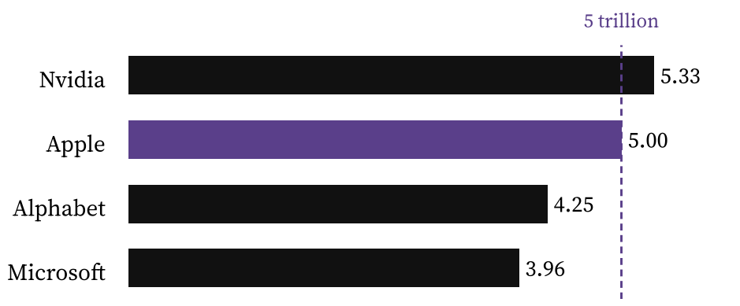

All the news a rigger needs, before the first shift
WORLD · LOCAL · MONEY · TECH · CRAFT · SPORT
Breaking · Middle East
Houthi missiles shut Riyadh airport as the Gulf war spreads to sky and sea
Deadliest attacks on Saudi soil in over a decade, ships sunk near Hormuz, oil stuck above 100 dollars
The new front line. Missiles and drones from Houthi-held Yemen flew roughly 1,070 km to hit Riyadh's main airport four times in five days, while Iran and the US Navy fight over shipping in the Strait of Hormuz. Graphic: The Paul Times. Sources: Al Jazeera, AP, UKMTO, WFP.
In briefThe worst strike, last Saturday, killed at least 13 and injured more than 300. The airport has been closed since. Brent crude closed Wednesday near 106 dollars.
Yemen's Iran-backed Houthis have turned King Khalid International Airport into a target. Saudi officials say a wave of drones went first to open a path for cruise and ballistic missiles, which then crossed more than 1,000 km of desert to reach the capital.
Riyadh has opened an inquiry into why its air defences failed, and workers in the financial district were told to stay home on Monday. The strikes mark a new phase of the regional war that began on 28 February, when the United States and Israel hit Tehran and more than 100 other sites in Iran.
Continued in The World →
The day in five lines
1Riyadh airport closed after the deadliest Houthi strikes yet.
2Hot US inflation: S&P 500 down 1.1%, worst day since July.
3Apple closes above 5 trillion dollars for the first time.
4Google finally ships Gemini 4 Argon.
5Mont Blanc measured almost 2 m taller.
Number of the day1,413
security flaws Microsoft patched this month, a record. One is already being exploited. Update tonight (Tech and AI).
Inside · tap to jump
Reading mode · test both
Swipe pages: every screen fits, swipe left for more. Scroll sections: one page per section, scroll down inside it.
2
The World
The lead story, then the smaller ones you should still know
Continued from the front
Riyadh: how the strikes unfolded
The first Houthi attacks came on Thursday 8 October, killing three Saudi citizens, including a pilot, and damaging an aircraft near Terminal 4. Saturday's missile hit the passenger terminal itself, the deadliest attack in the kingdom since the Iran war began. On Sunday another projectile struck the same terminal and killed a Pakistani resident.
On Wednesday a ballistic missile aimed at Riyadh was intercepted, debris wounding one person, and on Thursday the Saudi-led coalition said it shot down a cruise missile near Medina, which the Houthis deny. Inside Yemen, the World Food Programme says fighting around the besieged city of Taiz has cut about 800,000 people off from food aid.
At sea, the UK's maritime security agency counted eleven merchant ships attacked in and around Hormuz in the first ten days of October, by both Iran and US forces. On 10 October US Central Command disabled a cargo ship trying to break its blockade in the Gulf of Oman, and two more cargo ships were reported sunk near the strait this week. Even so, Middle East crude exports are reportedly creeping back towards pre-war levels.
“
Oil above 100 dollars keeps inflation sticky, and sticky inflation is what sank Wall Street on Wednesday.
Why it matters to you · see Markets
Where today's stories happen. Red dots: the briefs below. Black: the lead. Map: Natural Earth.
Ukraine
Truce over: Kyiv strikes Russian refineries again
Ukrainian drones hit a refinery in Russia's Ryazan region early Thursday, hours after President Zelensky declared a short truce, rejected by Moscow, finished. Russian strikes on Kyiv killed at least three and cut power to nearly 600,000 people.
Europe
EU summit opens on energy prices and the budget
Leaders met in Brussels to tackle energy costs and argue over the next budget, while holding a united line on Ukraine. Italy's Giorgia Meloni called a US diesel deal with Russia a very risky choice that could weaken pressure for peace talks.
Pakistan
School roof collapse kills 29
A private school roof collapsed in north-west Pakistan on Thursday, killing at least 28 children and a teacher and injuring more than 50.
Albania
Third day of student clashes in Tirana
Young anti-government protesters threw stones at police outside the Education Ministry; riot police answered with tear gas and water cannon.
North Korea
First underwater missile tests in nearly three years
Likely fired from a submarine designed to carry nuclear weapons, to check the readiness of underwater combat systems.
Nobel
Navi Pillay wins the Peace Prize
The South African jurist and former UN human rights chief is this year's laureate.
France
Cyberattacks on supermarkets
Several French chains were hit over the weekend. If you shop in France, watch for unusual card activity.
United States
Pension boost, and talk of the "mother of all bombs"
Social Security payments rise 3.6% in 2027. Reports say Washington is weighing its biggest non-nuclear bomb against Iran, which vows to fight on.
3
Local
Annecy, Haute-Savoie and the weather where you ride
Lead · Mont Blanc
Mont Blanc grew by almost two metres
A summit made of ice. The top is a snow and ice cap, so its height moves with snowfall and wind. Illustration: The Paul Times.
In briefThe official new height, unveiled Wednesday: 4,807.47 m, up 1.88 m from 4,805.59 m in 2023.
The rock itself stops around 4,792 m; everything above is snow and ice, which is why the figure moves and why surveyors climb back every two years with GNSS receivers, drones and ground radar. Good bar trivia for Saturday night: the height you learned at school is already out of date.
Weather
Amsterdam
20°C
today, cloudy
Fri
10°/18°
65%
Sat
9°/14°
20%
Sun
9°/12°
15%
Annecy
24°C
today, partly cloudy
Fri
9°/21°
10%
Sat
10°/15°
55%
Sun
9°/10°
50%
Scooter check: Friday is the wet one in Amsterdam (65% chance of rain). Rain gear on, and give yourself longer braking distances on the canal cobbles.
Justice
Knife attack suspect sent to the assizes
The suspect in the Annecy knife attack will be tried before the cour d'assises for the attempted murder of 13 people, confirmed in early October.
Roads
Chablais motorway: decision due today
The Lyon administrative appeal court heard a bid by 21 associations and 40 residents to stop work on the A412, which started in September. A ruling was expected on 15 October.
City
30 years after the quake, two days on major risks
Free event at Bonlieu on 23 and 24 October about natural risks, earthquakes included, marking the 1996 Annecy earthquake. The Impérial car park is closed at night this week.
Sport
A new pumptrack for the 2027 cycling worlds
The first official venue of the 2027 UCI Cycling World Championships in Haute-Savoie has been inaugurated.
Dutch word of the dayde regensay: "duh RAY-khun" · the rain
Morgen gaat het regenen. Tomorrow it is going to rain.
Bonus for the shift: Ik ben nat. I am wet.
4
Markets
Wednesday 14 October close, and your portfolio
Lead · Inflation
Hot US inflation hands Wall Street its worst day since July; Paris shrugs
In briefSeptember CPI came in hot (3.7% a year, core up 0.3% on the month), putting a Fed hike back on the table. Tech sold off hard. Europe closed higher.
Two rooms, two moods. Daily change, 14 October. Data: TheStreet, Zonebourse.
The S&P 500 lost 1.1% to 7,718.94, its fifth loss in six sessions since its record. Tech was the worst sector, down 3%. The fear is less about AI demand than about the cost of financing it: CoreWeave fell more than 15% as its 2032 bonds slid below 80 cents, and Oracle lost almost 9%.
Even a beat and raised outlook from ASML could not stop chips falling for a sixth day. On Thursday the Fed's John Williams said he sees no hikes needed in 2027, which calmed nerves a little. Europe went the other way: the CAC 40 gained 0.58% to 7,873, lifted by Danone, Airbus and L'Oréal. Apple closed above 5 trillion dollars for the first time.
Other markets
Market
Level
Change
AEX
1,137.09
+0.69%
CAC 40
7,873.11
+0.58%
EUR/USD (Thu)
1.120
+0.4%
Gold $/oz
~4,100
~+1% Thu
Brent $/bbl
106.06
+0.35%
US 10-year
5.19%
-2 bp
A stronger euro trims the dollar gains of your US-heavy ETFs when converted back.
Your money
Your portfolio
Revolut ETFs: weight vs your target. Red bar = more than 3 points over target. From your ETF_Investment_Plan sheet.
Revolut ETFs
ETF
Value €
P&L
EQQB Nasdaq 100
855.60
+29.1%
EUNL MSCI World
519.02
+14.9%
EXSA STOXX 600
245.30
+0.1%
CEBL EM Asia
238.27
-4.6%
SEC0 Semis
173.73
-3.5%
IS3S World Value
123.37
-1.3%
IUSN Small Cap
119.20
-0.7%
Total (cost 2,034)
2,274.49
+11.8%
eToro · USD, read-only
Holding
Value
Open P&L
Share
JodySlaney
11,747
+1,690
74%
Aukie2008
4,147
+730
26%
SOL + ASML
42
+0.4
0.3%
Total
15,936
+2,421
Straight talk: EQQB is 37.6% of your ETFs against a 15% target, and it is the slice that fell hardest yesterday. Since you only rebalance by adding, send the next weekly buys to EXSA, CEBL, IS3S and IUSN and pause new EQQB money. On eToro, three quarters sits with the more volatile, crypto-heavy trader: decide if that is on purpose.
Information, not financial advice.
5
Crypto
Coins, stablecoins, CBDCs and the rules around them
Lead · Bitcoin
Bitcoin slips under 82,000 dollars as the inflation print bites
Down on the year, up on the month. BTC in dollars over the last month, time to scale. Data: Fortune, CoinGecko via CoinGabbar, The Block.
Bitcoin fell about 2% after the US CPI release, with ETH, XRP and SOL down around 3%, and traded near 80,500 dollars by Wednesday evening. It had bounced from about 81,000 to almost 84,000 earlier in the week, then stalled under resistance at 83,600 to 84,000.
Big holders did not blink: Strive disclosed more purchases, taking it above 32,000 BTC; SpaceX said it still holds all 18,712 of its coins; and Michael Saylor declared the bear market over. Thailand's bitcoin ETF rules take effect on 16 October.
Prices · Thursday afternoon
Coin
Price $
24h
Bitcoin
~82,400
+1.1%
Ether
~2,448
+0.7%
Solana
~106.1
+1.7%
XRP
~1.34
+1.1%
Tether USDT
1.00
pegged
USD Coin USDC
1.00
pegged
Snapshot from CoinDesk's ticker; prices moved fast today, so treat as approximate.
Europe · Stablecoins
USDC becomes the EU's first "significant" stablecoin
The European Banking Authority named Circle's USDC the first significant e-money token under MiCA, out of 45, with tighter supervision from 12 November. ESMA gave licensed firms three months to stop serving non-compliant stablecoins, and bank consortium Qivalis won approval for a euro stablecoin.
CBDC
Digital euro pilot in 2027; Sweden rethinks the e-krona
The ECB picked 36 payment firms for a pilot in the second half of 2027, aiming for issuance in 2029 if the law passes this year. Sweden's Riksbank asked lawmakers to prepare a digital krona because of dollar stablecoins; the Bank of England is in no rush. In the US, the GENIUS Act bars a retail Fed CBDC.
United States
Clarity Act stalls; White House crypto adviser quits
Patrick Witt left his role as the market-structure bill stays stuck. Standard Chartered pushed its 2 trillion dollar stablecoin forecast back to 2030.
6
Tech and AI
Models, chips and the patch you need tonight
Lead · AI
Google finally ships Gemini 4 Argon after months of delays
In briefGoogle's flagship model went live on 13 October for developers, businesses and paying subscribers worldwide.
Argon is built for long, complex jobs: coding, science and security work. Google says internal use brought a 35% rise in code submitted by AI agents and about a third fewer reverted changes. It is available through the paid Gemini API, to AI Pro and Ultra subscribers, and in the Antigravity coding tool for Ultra users.
The launch follows a rough stretch: Google dropped its planned Gemini 3.5 Pro after delays. The field is crowded. OpenAI rolled out GPT-6 in ChatGPT on 8 October, with an "Intelligent UI" that answers with buttons, forms and charts, and told developers older GPT-4 models leave its API in January 2027.

The 5 trillion club. Market value at Wednesday's close, trillion dollars. Apple joins Nvidia above the line. Data: Nasdaq via FourWeekMBA.
“
Once open models are out in public, they can't be put back in the box.
Benjamin Mann, Anthropic co-founder
AI · Safety
Anthropic doubles down against open weights
At events in Dublin and Singapore, Anthropic executives argued safeguards cannot survive the release of model weights, and defended keeping oversight of how customers use its strongest models. Critics see a business model being protected.
Security
Patch your PC: a record 1,413 fixes
Microsoft's October update covers 1,102 Windows bugs, including a zero-day already exploited via booby-trapped files. With your BSOD hunt ongoing: update, reboot, then watch stability for a few days.
Chips
Microsoft's own AI chip, Maia 200, is in production
Already running in its Iowa and Arizona data centres in place of Nvidia, Intel and AMD parts. Nvidia is taking a minority stake in French health app Doctolib.
Apple · Cloud gaming
HomeView hub and HomePod mini 2; DLSS 4.5 on GeForce NOW
Apple's new home hardware follows the iPhone 18 Pro and iPhone Duo. Nvidia gives cloud players more control over image quality.
Quote of the day"Perfection is achieved, not when there is nothing more to add, but when there is nothing left to take away."
Antoine de Saint-Exupéry, pilot and writer, 1939. Also the best rule for a control rig: every extra control is something an animator has to learn.
7
The Craft
3D, rigging, software, games and your next job
Lead · Rigging
mGear 5.4 lands with a unified facial rigger and a new Anim Picker
The rigger's daily bread. FK and IK controls on a joint chain, the setups tools like mGear build for you. Illustration: The Paul Times.
In briefThe free, open-source Maya framework updated on 14 October: unified facial rigging, a redesigned Anim Picker and 3D onion skinning.
The standout tool for riggers is Blendshape Setup Transfer: it moves blendshape setups between character meshes and generates Set Driven Key setups straight from timeline poses. You pose the character and the tool writes the setup, instead of keying values one at a time. Animators get "Blocking Ghosts", semi-transparent copies of the character at each key.
Why it matters to you: mGear is everywhere in studio pipelines, and its new picker sits right next to what you build for AviaRigg. Study its UX before your next picker script.
Tool of the week
mGear 5.4 Blendshape Setup Transfer. Take a finished face from an old rig, transfer its blendshape and SDK setup to a new head, and time it against doing it by hand. Even if you never ship mGear rigs, "pose first, generate the SDK after" is a pattern worth copying in your own Python tools.
3D software
ZBrush 2027 and Mari 8 released
Maxon's ZBrush 2027.0 adds a desktop UV Editor and projection painting on iPad. Foundry's Mari 8.0 brings tri-planar and hex tiling nodes plus A/B comparisons.
3D software
Blender 5.3 in beta, 5.4 in alpha
New texture-paint mask brush and better asset handling; the Animation and Rigging module met on 6 October. Maya's current release is 2027.1 (you are on 2026).
Animation and VFX
Outpost VFX opens in Germany; Haymaker buys SWISS
Consolidation continues. A 2026 industry atlas found net growth of 2.7%, Vancouver rebounding, LA shrinking, and no sign yet in the data that AI has cut jobs.
Video games
Out today: Castlevania Belmont's Curse, Enshrouded 1.0
Final Fantasy Resonance (22 Oct) is getting 9/10 reviews. Nintendo showed five minutes of the Ocarina of Time remake. Monster Hunter Wilds gets a Switch 2 demo on 20 October; Call of Duty: Modern Warfare 4 lands 23 October.
Rigging job board
Today's industry roundup (AWN, 15 Oct, 21 openings) has lighting, comp and production roles but no dedicated rigging posts. Worth watching:
· Swaybox Studios: Character Rigging TD (US, full time) · Crafty Apes, Supaglu (Australia): recurring Maya animation calls · Netflix Animation, ILM Sydney: active Sydney hiring
Australia corner
Since 1 July 2026 the skilled visa bar is higher: Core Skills Income Threshold AUD 79,423; 482 visa fee AUD 4,015; up to 10 months' processing on the 482 core stream. For a May 2027 start, begin the paperwork early in 2027 at the latest. Many Sydney posts ask for existing work rights.
8
Sport
Formula 1 · Tennis · Les Bleus
Lead · Formula 1
Antonelli can be crowned in Austin, at 20, the youngest champion ever
In briefA 102-point lead over team-mate George Russell. Extend it by 23 points at COTA (23 to 25 October) and the title is his.
Circuit of the Americas. 5.513 km, 56 laps. Race Sunday 25 October, 22:00 Amsterdam time. No sprint this year. Track data: bacinger/f1-circuits.
Antonelli was third in Singapore, where Max Verstappen won for Red Bull, his second win in a row. The fight for second is wide open: Russell leads Lewis Hamilton by just nine points, with Verstappen and Charles Leclerc close. Reigning champion Lando Norris is still alive on paper.
Paddock notes: Verstappen will work with Tom Hart instead of long-time engineer Gianpiero Lambiase at selected races, starting in Austin. Williams brings an Avengers: Doomsday show car to its Austin fan zone; it will not race.
Tech desk · for the SF-26 project
Red Bull's sidepod trick likely banned for 2027. A structural cable along the lower sidepod let Red Bull use a 20 mm radius rule to mould a far sharper undercut. A proposal cuts it to 5 mm, forcing Red Bull and Audi to redesign.
Ferrari shelves a bigger SF-26 turbo. It missed reliability targets and moves to 2027.
2027 recap: ICE up to 420 kW (450 in 2028), MGU-K down to 300 kW, power split 53/47 becomes 58/42, race distance 305 to 290 km.
Tennis · Shanghai Masters
Zverev into the semis; Géa's run ends
Top seed Alexander Zverev beat Alex de Minaur in straight sets and meets Alejandro Davidovich Fokina, who advanced when Frenchman Arthur Géa retired. Géa had knocked out 13th seed Jakub Menšík in the last 16. Medvedev beat Tsitsipas 6-4 7-5. Final on 18 October. French watch: Arthur Fils is world No. 11, down two this week.
Les Bleus
Zidane's France: a draw, then a statement
2 Oct1-1v Italy
5 Oct4-1v Belgium
12 Nov?at Italy
15 Nov?v Turkey
Zinédine Zidane took over on 28 July after the World Cup (France finished fourth). France drew with Italy, then came from behind to beat Belgium 4-1 with goals from Désiré Doué, Rayan Cherki and a late Michael Olise double. The women's team crushed Latvia 9-0 in Laval.
On this day · 15 October
1997ThrustSSC, driven by Andy Green, sets the first supersonic land speed record in Nevada: about 1,228 km/h, Mach 1.02. It still stands.
1917Dancer and convicted spy Mata Hari is executed by firing squad at Vincennes, near Paris.
1582The Gregorian calendar starts in Italy, Spain and Portugal: the day before was 4 October. Ten days simply vanished.
Fri 16Thailand bitcoin ETF rules · rain in Amsterdam
Sun 18Shanghai Masters final
Tue 20Monster Hunter Wilds Switch 2 demo
Wed 21Revolut free trades reset
Thu 22Final Fantasy Resonance
Fri 23COD: MW4 · US GP practice · Annecy risks event
Sun 25US Grand Prix 22:00, Antonelli's title shot · clocks go back 1 hour
12 NovItaly v France, San Siro
29 NovAnnecy Christmas market opens
Editorial
The price of a missile is paid at the pump
It is tempting to file the Riyadh strikes under "far away". They are not. A war that now reaches a G20 capital's main airport and the world's key oil chokepoint feeds straight into the inflation number that sank Wall Street on Wednesday, and into the rate path that decides what your ETFs and crypto do next.
Markets are pricing a long conflict, not a quick ceasefire. The most exposed parts of a portfolio are the ones that live on cheap money: richly valued tech and AI, and crypto. That is not a call to sell. It is an argument for owning the boring, diversified pieces you already planned to own, and not letting one hot sector quietly become a third of everything.
Opinion. The other side: some analysts argue AI earnings are strong enough to outrun higher rates, and that selloffs like Wednesday's are buying chances.
10
Back Page
A tip for tonight, and where today's facts came from
Rigging tip · Maya 2026
Stop building offset groups above your controls. Since Maya 2020 every transform has an offsetParentMatrix attribute. Copy the control's world matrix into it (or drive it from a multMatrix or blendMatrix node), then zero the transform: channels read 0 at bind pose with no extra _grp or _offset node.
Python: cmds.setAttr(ctrl + ".offsetParentMatrix", cmds.xform(ctrl, q=True, m=True, ws=True), type="matrix"), then reset translate, rotate and scale. Best on controls parented to the world or an unscaled group.
Sources
World: CNBC, Al Jazeera, AP/PBS, NPR, CNN; Kurdistan24, China Daily, gCaptain, AzerNews; Democracy Now; Euronews, Morning Star, Sunday Guardian, The Hindu.
Local: France 3 Auvergne-Rhône-Alpes; annecy.fr; Alpine Mag (Mont Blanc 4,807.47 m); forecast service, °C.
Markets: TheStreet, Yahoo Finance/AP, Washington Post, Strategitz, CaixaBank Research, Zonebourse, MoneyVox, MarketScreener, Trading Economics, 9to5Mac, MacRumors.
Portfolio: your eToro account (read-only, 15 Oct 19:28); ETF_Investment_Plan sheet, Holdings tab.
Crypto: The Block, CoinDesk, CoinMarketCap, CoinGabbar, Fortune, KuCoin, Cryptonews AU, TokenPost, CoinGeek, Cointelegraph, The Paypers.
Tech and AI: American Bazaar, Releasebot, Bloomberg, Fortune, Yahoo Finance, Tech Startups, Nvidia newsroom.
The craft: CG Channel, Blender dev forum, AWN, Game Informer, Instant Gaming, Nintendo Life, ZipRecruiter, Glassdoor, Indeed AU.